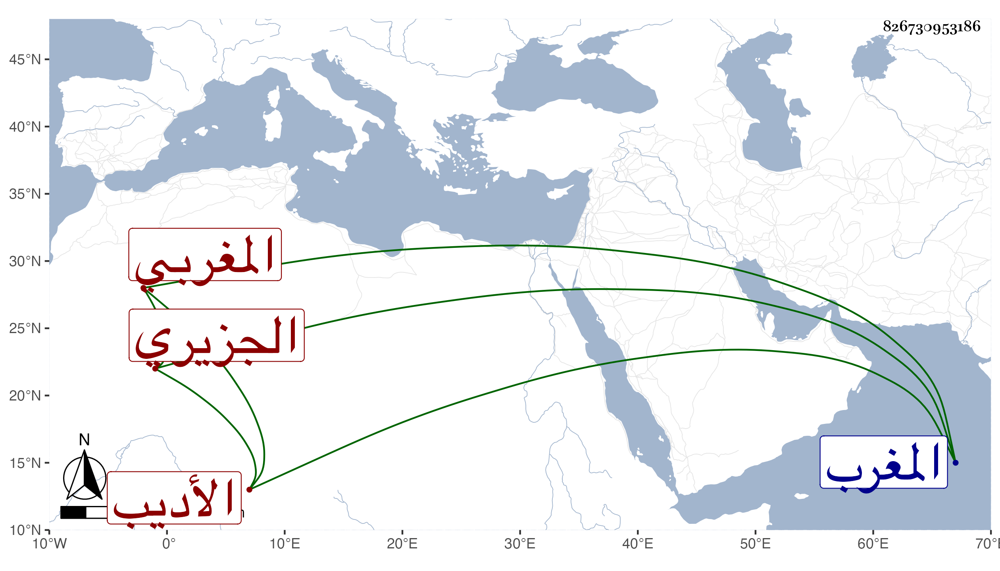

0902Sakhawi.DawLamic.ITO20230111-ara1.EIS1600.826730953186
Biography ID: 826730953186
729
منصور الجزيري المغربي الأديب مؤرخ المغرب . كان حيا في سنة إحدى وخمسين وله نظم في عبد الكريم بن عبد الغني بن إبرهيم ومنه :
| لئن طال حفضي عند خدام بابكم | ولم يؤثروا بالرفع إلا مخازني |
| سأنفق عمري في حساب زمانهم | وأغلق عن كسب العلوم مخازني |
